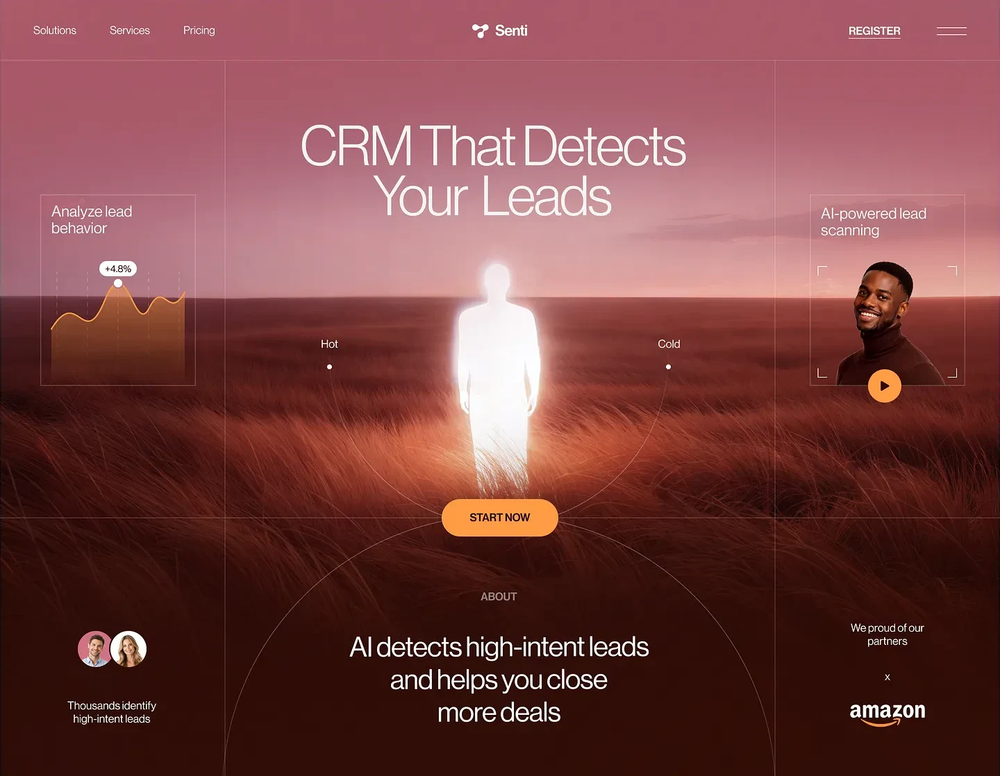

Design in
the open
One brief becomes a website, mark, vector or silent motion. Research, tools and review stay beside the work.
Windows 10/11 x64 v1.2.0
The Mees desktop workspace

Work you can follow
Search, page reads and browser checks enter the same run. The source, the decision and the measured result stay available beside the artifact.
-
Web search
Find current context, then keep the result attached to the run.
Source visible -
Page reading
Open the page that matters instead of building from a search excerpt.
Evidence visible -
Canvas review
Run the artifact in a real browser before calling the design complete.
Findings visible -
Local files
Keep references, versions and saved artifacts in your own workspace.
Ownership visible
Four outputs, one session
Each mode is a different artifact with different review rules, not a resized version of the same template.
Bring your own model
Connect your own paid API account. Mees reads the models available to that key and keeps provider secrets inside the desktop main process.
Supported providers: OpenAI, Claude, Gemini and DeepSeek.
Your work stays yours
Projects, references and version history live on your machine. API keys are encrypted with protected operating-system storage.